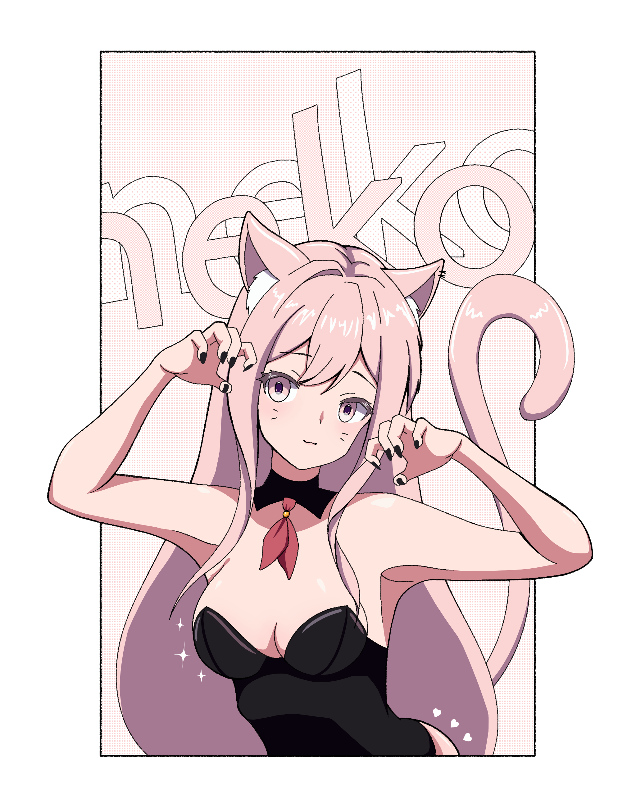
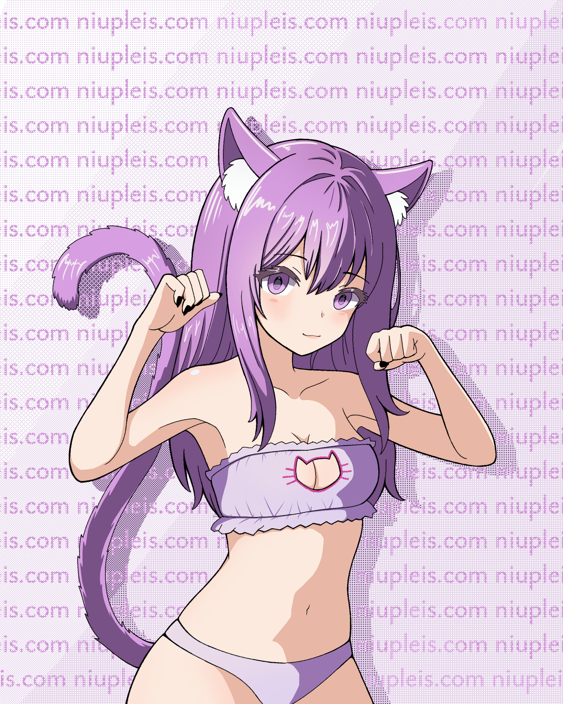

Canal de arte en YouTube
Hace tiempo me hice este canal para subir mis speedpaints, no le dí importancia hasta hace dias que empecé a subir speedpaints y publicaciones
@suteki_studio  2. Actualización en niupleis.com
Este blog se aloja en el sibdominio blog.niupleis.com (blog) porque el dominio principal (www) se supone que sea usado para el desarrollo universo niupleis, pero hasta hace unas horas la página estaba en blanco.

Lo cual no es muy aesthetic, así que decidí poner banners en 4 idiomas que avisando que el sitio está en construcción, y añadí un enlace a este blog. Puedes ver este cambió aquí.